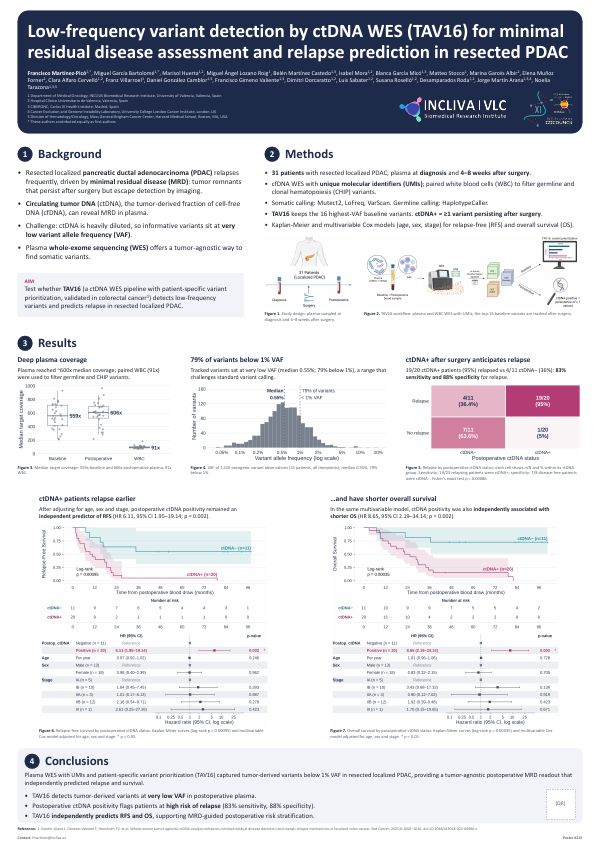
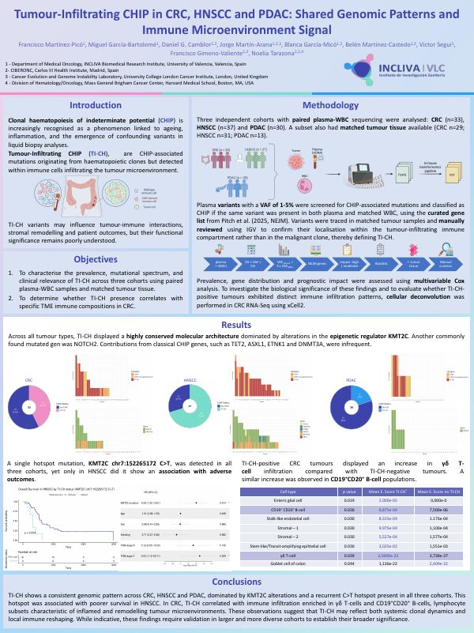

SEBiBC II · 2026
Low-frequency variant detection by ctDNA WES (TAV16) for minimal residual disease assessment and relapse prediction in resected PDAC

XI Liquid Biopsy Symposium · Santiago de Compostela · January 2026

SEBiBC II · 2026

XI Liquid Biopsy Symposium · Santiago de Compostela · January 2026